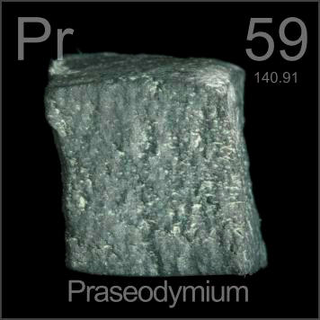

HOME
PREVIOUS
NEXT

Praseodymium
Atomic Weight: 140.90766
Density: 6.64 g/cm3
Melting Point: 931 °C
Boiling Point: 3290 °C
Metallic praseodymium like this is not much used, but when mixed into glass it provides a precise blue color that filters out the yellow glow of molten glass, allowing glassblowers to see their work clearly.